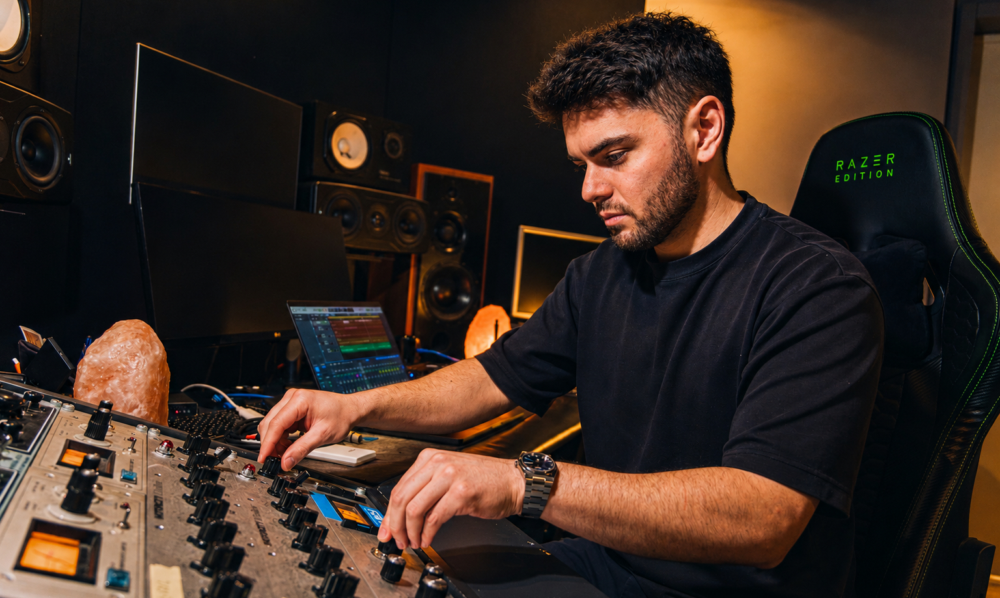

At first, it's only noise.
Then it becomes sound.
The mix gives it shape.
The master makes it timeless.
At first, it's only noise.
Then it becomes sound.
The mix gives it shape.
The master makes it timeless.
Mixing & Mastering — Milan, Italy — 15+ years
Professional mixing and mastering for artists who hear exactly how their music should sound — and won't settle for less.
I'm Angelo, an Italian audio engineer with over 15 years working with artists across Europe, North America and Australia. My workflow is hybrid: best-in-class digital processing built around selective analog stages that add the warmth and depth no plugin chain fully replicates.
Every genre has its own physics. EDM lives in sub frequencies and headroom. RnB lives in vocal air and pocket. Melodic Techno lives in space and tension. I know the difference — and I engineer for it.

Your stereo mix brought to its absolute best. Loudness, dynamics, stereo width, true peak. Platform-ready in every format, Apple Digital Masters compliant.
From stems to final master. Hybrid chain, surgical precision, musical decisions. Every element balanced, every detail considered — revisions until it's exactly right.
Tuning, timing alignment, comping, compression, de-essing, reverb and creative effects. Vocals that sit perfectly in the mix without losing emotion or character.
More control than stereo mastering, more focus than a full mix. Send up to 8 stems and get a sculpted, dynamic final master with precision per element.
Satisfaction guaranteed — unlimited revisions until you love it. Prices are list-price guidelines: every project can get a custom offer, especially for multiple tracks.
Digital precision meets analog character. Real transformers and discrete circuits add harmonic depth no plugin fully replicates.
Every genre has different physics. I engineer for your specific sound, not a generic template.
Mastering in 48h. Mix & Master in 3 to 5 days. Responsive communication throughout.
Revisions until you love it. Your satisfaction is the only standard that matters.
Certified for the highest streaming quality standard on Apple Music. Your music, heard exactly as intended.
Delivered ready for Spotify, Apple Music, Tidal, Beatport and every major platform. Correct loudness, true peak and format — out of the box.
WAV, correctly labelled and gain-staged. I confirm everything is in order before starting.
Tell me your vision. Reference tracks, genre context, target platforms. The more I know, the better the result.
Mixing, processing, mastering. Hybrid chain, musical decisions. Every track treated as its own world.
You receive a preview. Feedback, revisions if needed — final files in every format when you're fully satisfied.

Every track treated as its own world.
The same track, raw and mastered. Press play and drag the fader — the difference explains everything.
Countries and counting. Artists, producers, labels and recording studios.
All I can say is WOW. The song turned out even better than I expected. Angelo is someone you work with once and never want to leave.
Working with Angelo struck new inspiration in me as a producer. His ability to bring a song together and make the vision come to life is next level.
Four masters delivered in under a week. Patient, revision-ready, obsessed with the best result. Always impressed by Angelo's work, every single time.
Third time working with Angelo and it keeps getting better. He brought my track to life — clean, powerful, professional. The gold standard.
Measure Integrated LUFS, True Peak and Loudness Range instantly. Compare your track against Spotify, Apple Music, YouTube and every major platform. Free, no install, nothing leaves your browser.
Tell me about your project. I respond within a few hours, every day.
Only 2 slots left this week
List estimate — multi-track projects get custom offers.